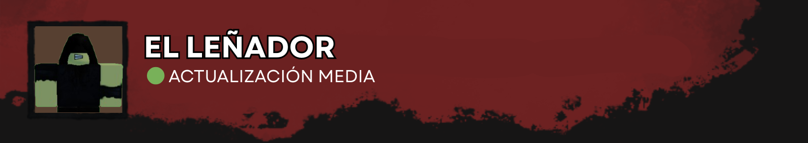
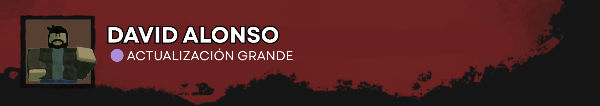
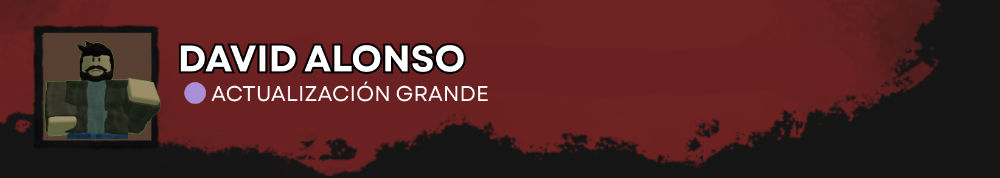
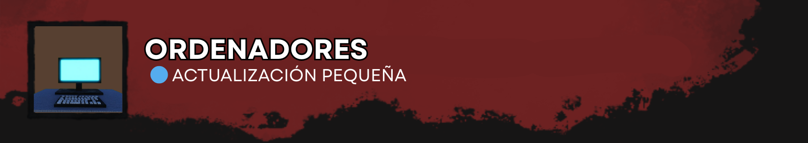
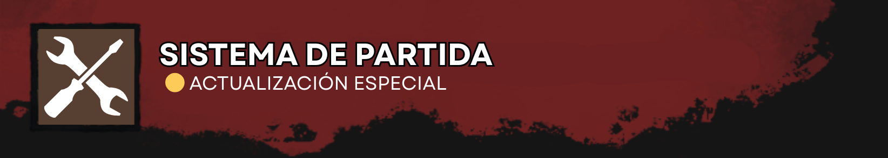

📌 Próximos Cambios en la siguiente BETA | Septiembre 2025
Última actualización de este apartado: 02 de Septiembre, 2025Escrito por @Adeveloper_games (Administrador)
CAMBIOS A DESTACAR
- A petición de la mayoría de jugadores que probaron el aspecto de Asesino, este ha sido revisado y mejorado en distintos aspectos. ¡Nos encantaría escuchar sus opiniones al respecto antes de sacar la BETA con dichos cambios!
- - Se le ha reducido la velocidad a 4.2m/s. (La del superviviente, es de 3.7m/s)
- - Se ha adaptado el sistema de recoger al superviviente para todas las plataformas. (F en PC, R1 en PS4/PS5 y RB en XboX)
- - Las animaciones de recoger al superviviente, ya funcionan correctamente.
- - Se ha desactivado la colisión con el superviviente que se carga.
- - Se ha arreglado el sistema de dañar ordenadores
Comentario Anónimo de un Desarrollador: "Son ciertos aspectos, que no se podían aplicar en un parche normal y corriente de balance de la versión BETA y por eso nos hemos tenido que esperar."
 

- A ciertos jugadores, les gustó jugar como superviviente y al mismo tiempo escapar del Asesino. ¿Qué os parecen los siguientes pequeños ajustes de calidad para la jugabilidad como Superviviente?
- - Se ha agregado un sistema de forcejeo con el asesino cuando lo carga en hombros con pruebas de habilidad continuas
- - Se ha agregado un pequeño cooldown entre las pruebas de habilidad en los ordenadores
- - Se ha solucionado un error grave con las animaciones de distintos estados de salud

- Ciertos pequeños ajustes que necesitaban los ordenadores en el sistema de partida...
- - Se ha aumentado el progreso de la prueba de habilidad excelente a 2%. (Antes: 1%)
- - Se ha disminuido el tamaño de la prueba de habilidad excelente.
- - Se ha agregado una animación para el Asesino cuando daña el ordenador.

- En absoluto. En absoluto, los únicos cambios irán dirigidos al sistema de superviviente, asesino y/o ordenadores. También hemos preparado algo para el sistema de partida... ¿Os parece bien?
- - Se ha agregado un sistema complejo en los congeladores dónde, los supervivientes, pueden salvarse entre sí, morir en los congeladores y el Asesino, puede adentrar a supervivientes en ellos.
- - En el sistema de forcejeo del superviviente, si el superviviente, falla o no hace las pruebas de habilidad, la barra de forcejeo, no disminuirá. Tan solo, aumentará muy despacio.
- - Se ha aplicado un sistema máximo de vidas equivalente a 130 segundos. Cuando pasen 60 segundos, el superviviente, perderá 1 vida y cuando esté en la fase del congelamiento, tendrá que ir haciendo pruebas de habilidad que a medida que el tiempo disminuya, serán más dificiles. Si el superviviente, pierde su segunda vida, directamente, morirá por hipotermia, y será mandado al lobby pero antes de ello, una oportunidad de revivir mediante un gamepass será presentada.